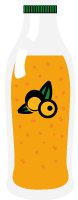
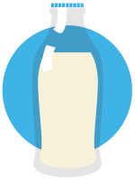
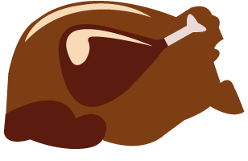
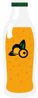
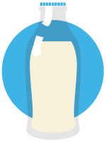
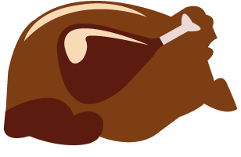

X
Crédits
Cette animation a été créée dans la joie et la bonne humeur par de jeunes talents étudiant à Nantes, dans le cadre du projet Hyblab 2015.
Textes : Camille Lhommelet, Leslie Paul (Sciences Com).
Création graphique : Timothée Jaouen, Arthur Kostadinoff, Chloé Poitevin (AGR, l'école de l'image).
Développement : Maxime Bellier, Guillaume Connan, David Tollec (Polytech Nantes).
Eric Lecluyse encadrait cette équipe en tant que responsable éditorial du site The Place to Bio.
Nous tenons à remercier le ministère de l’Agriculture (Agreste) et l’Agence bio qui nous ont permis de rassembler des données en un temps record.


 




